Background
The clip page, as it’s known at Vimeo, is arguably the most important viewing surface across all of Vimeo’s web and mobile traffic. It’s where most people watch videos, where links point to, and where people share from.
Viewing minutes were down on mobile web. I was asked to investigate, improve key metrics on the page, and give it a brand refresh at the same time.
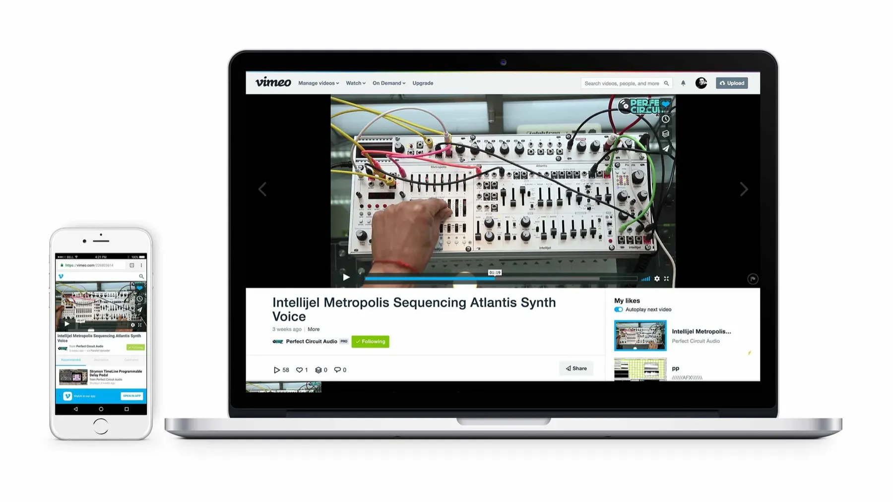
Analytics
Social traffic, especially from Facebook, was the biggest source of mobile web visits: roughly 9 million weekly views from Facebook alone. That’s 9 million chances to get people more involved with Vimeo, and to turn some of them into creators who pay for upgrades.
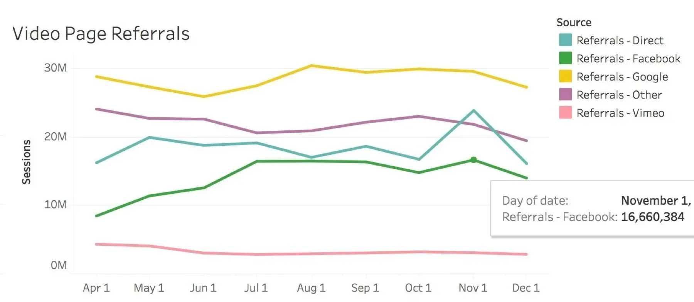
Target metrics
- Increase the share of visitors who play a video (reduce bounce rate)
- Increase total time spent watching
- Increase taps on the app install button
- Increase shares
Competitive analysis
How were other companies solving these problems? I looked at a lot of services, and clear patterns emerged.
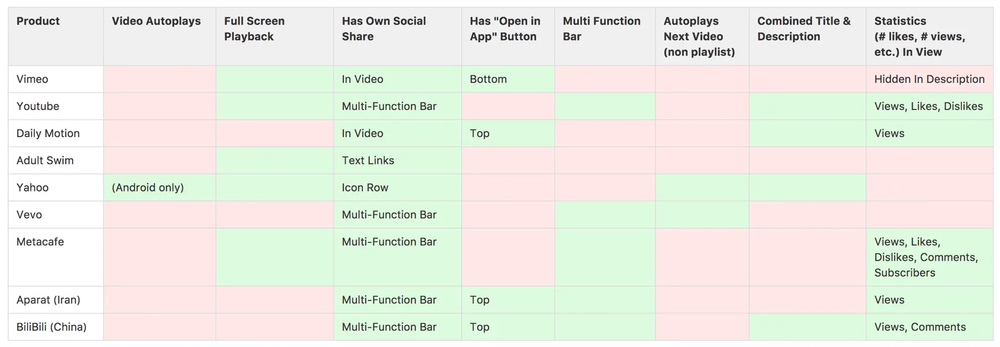
Test 1: The play button
Competitive analysis showed Vimeo was one of only two products without a centered play button.
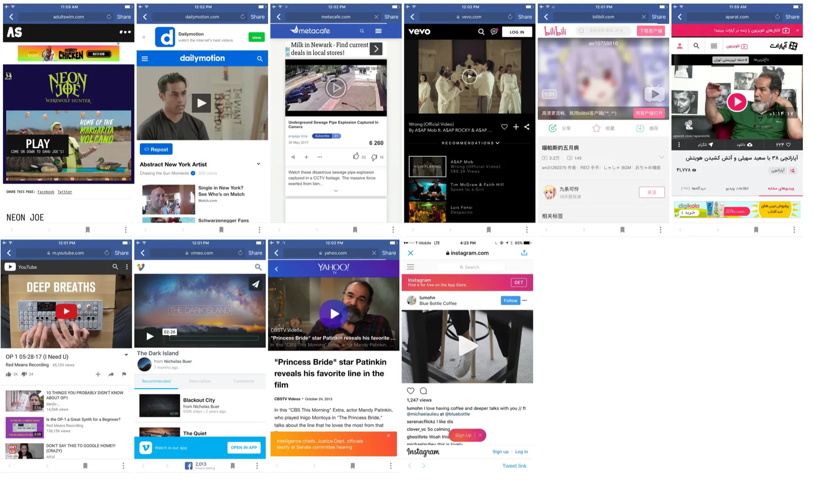
We wanted data on whether the play button affected the rate of plays after landing. We ran two variants: one moved the button to the center, and one also made it 25% bigger.
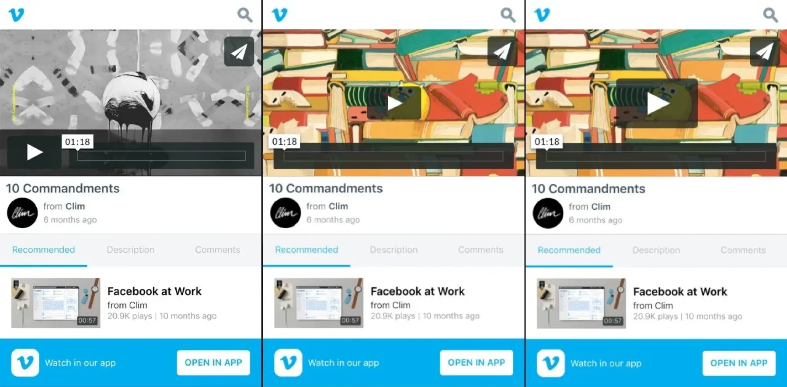
Test 2: The app banner
Based on patterns from other mobile products, I tested new app banner designs to see if they would increase taps to download the native app, varying both placement and button language.
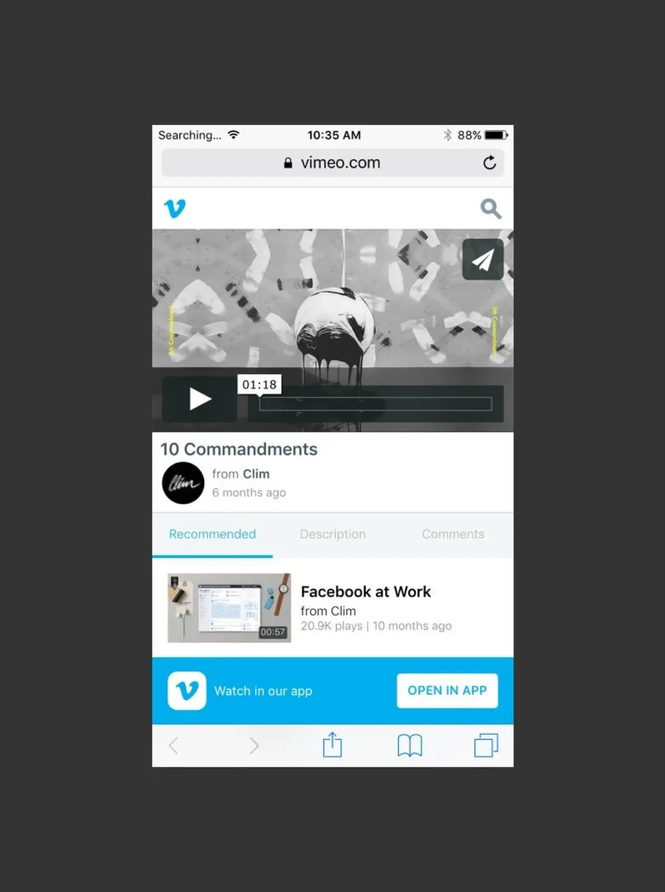
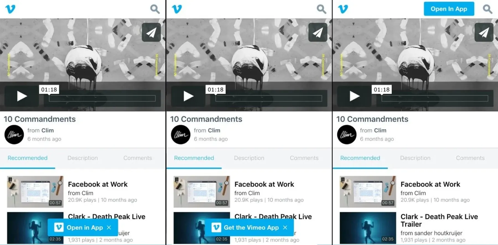
Test 3: Social share
A subtler test about iconography. The redesigned share button had three variants: no icon, a traditional share icon, and an icon from Vimeo’s design system.
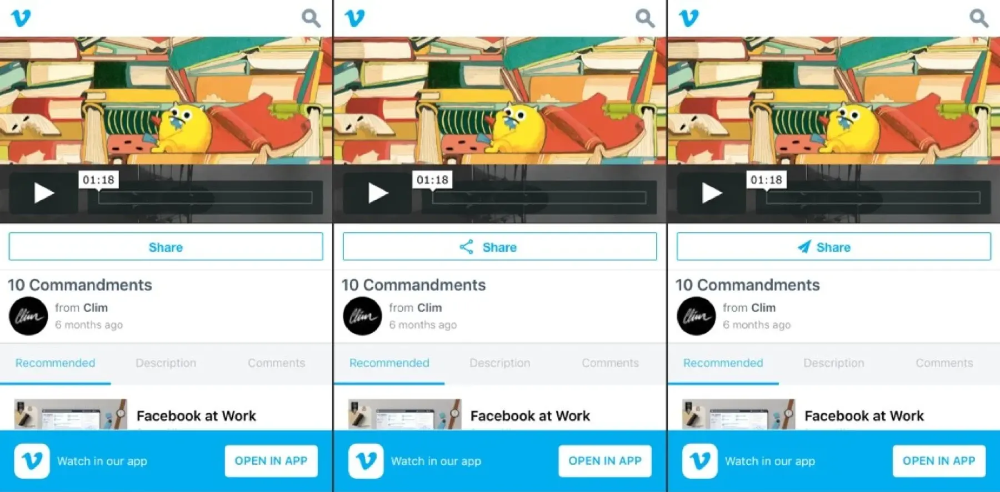
Results
Verified results from the business intelligence team, based on roughly 100,000 sessions:
Time spent watching and share rate showed no significant change. The two winning designs were applied to mobile web, and we kept gathering data before bringing them to the native apps.
Final designs
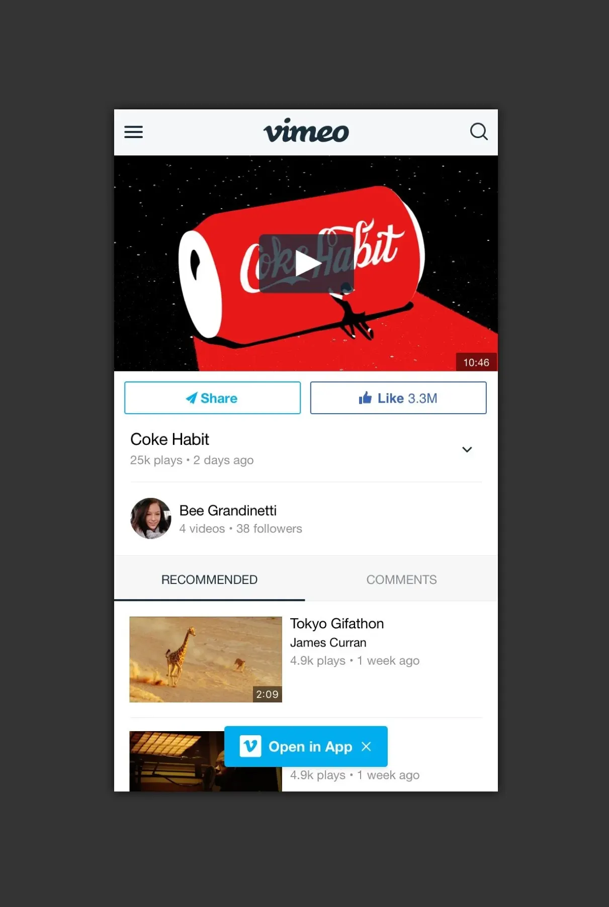
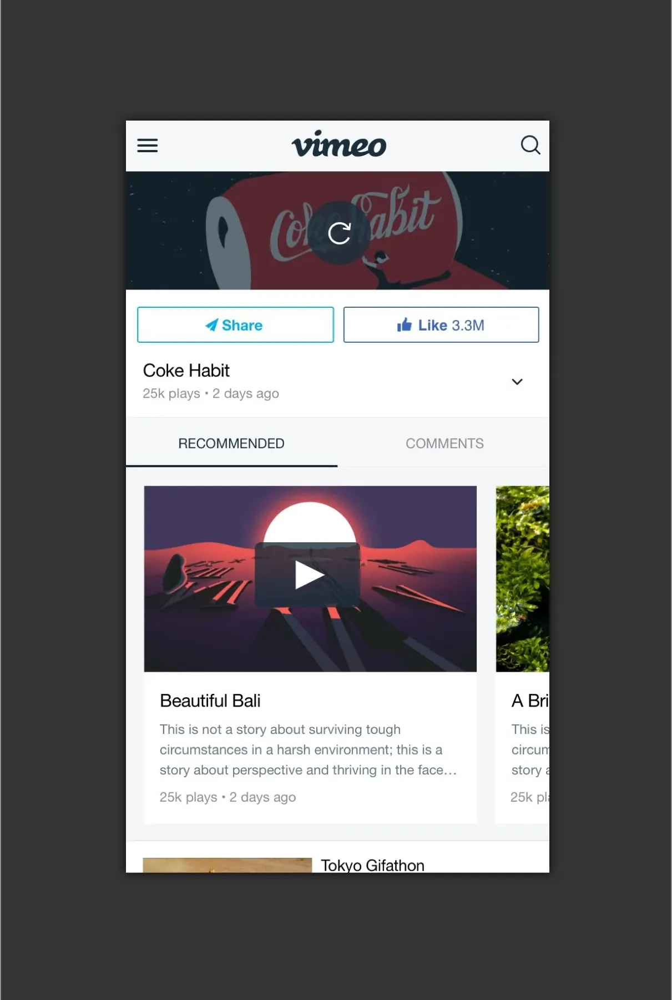
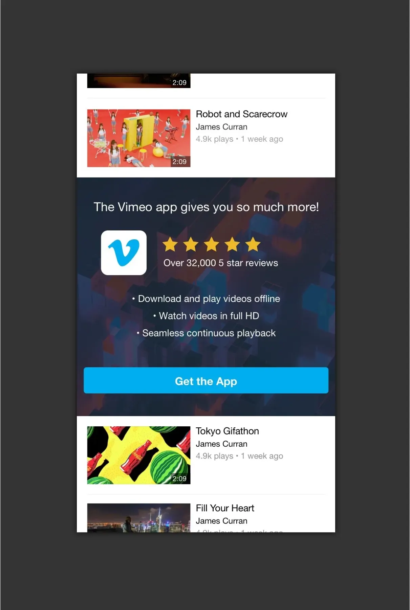